多线程编程
8 共享模型之并发工具
8.2 J.U.C
8.2.1AQS原理
概述
抽象父类，全称是 AbstractQueuedSynchronizer，是阻塞式锁和相关的同步器工具的父类
1
2
3public abstract class AbstractQueuedSynchronizer
extends AbstractOwnableSynchronizer
implements java.io.Serializable {特点：
- 用
private volatile int state;属性来表示资源的状态（独占模式和共享模式），子类需要定义如何维护这个状态，控制如何获取锁和释放锁getState- 获取 state 状态setState- 设置 state 状态compareAndSetState- cas 机制设置 state 状态- 独占模式是只有一个线程能够访问资源，而共享模式可以允许多个线程访问资源
- 提供了基于 FIFO 的等待队列，类似于 Monitor 的 EntryList
- 条件变量来实现等待、唤醒机制，支持多个条件变量，类似于 Monitor 的 WaitSet
- 用
子类主要实现这样一些方法（默认抛出UnsupportedOperationException）
- tryAcquire——尝试获取锁
- tryRelease ——尝试释放锁
- tryAcquireShared
- tryReleaseShared
- isHeldExclusively——是否持有独占锁
获取锁的姿势
1
2
3
4// 如果获取锁失败
if (!tryAcquire(arg)) {
// 入队, 可以选择阻塞当前线程 park unpark
}释放锁的姿势
1
2
3
4// 如果释放锁成功
if (tryRelease(arg)) {
// 让阻塞线程恢复运行
}
自定义同步器类实现不可重入锁
1 | 4j(topic = "MultiThread") |
8.2.2 ReentrantLock 原理
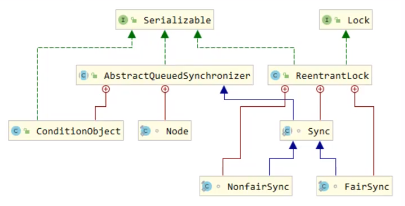
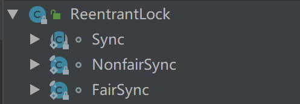
非公平锁实现原理——加锁解锁流程
先从构造器开始看，默认为非公平锁实现
1
2
3public ReentrantLock() {
sync = new NonfairSync();
}加锁
1
2
3public void lock() {
sync.lock();
}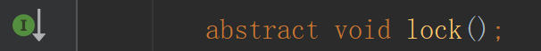
1
2
3
4
5
6
7
8
9
10
11
12final void lock() { //和自定义的同步器很像
if (compareAndSetState(0, 1))
setExclusiveOwnerThread(Thread.currentThread());
else
acquire(1); //尝试加锁失败
}
public final void acquire(int arg) {
if (!tryAcquire(arg) && /*再尝试一次*/
acquireQueued(addWaiter(Node.EXCLUSIVE), arg)) // 失败 创建一个节点对象
selfInterrupt(); // 被打断时可以执行到此处
}没有竞争时
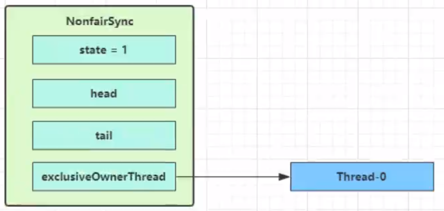
有竞争时，Thread-1 执行了
CAS 尝试将 state 由 0 改为 1，结果失败
进入 tryAcquire 逻辑，这时 state 已经是1，结果仍然失败
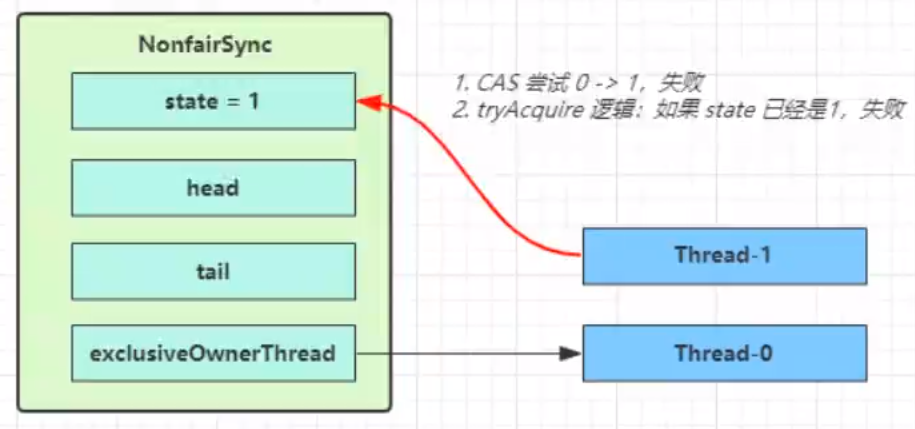
接下来进入
addWaiter逻辑，构造 Node 队列- 图中黄色三角表示该
Node的waitStatus状态，其中 0 为默认正常状态 - Node 的创建是懒惰的
- 其中第一个 Node 称为 Dummy（哑元）或哨兵，用来占位，并不关联线程
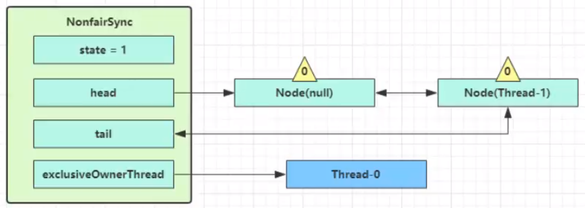
- 图中黄色三角表示该
当前线程进入 acquireQueued 逻辑
- acquireQueued 会在一个死循环中不断尝试获得锁，失败后进入 park 阻塞
- 如果自己是紧邻着 head（排第二位），那么再次 tryAcquire 尝试获取锁，当然这时 state 仍为 1，失败
- 进入
shouldParkAfterFailedAcquire逻辑，将前驱node，即head的 waitStatus 改为 -1，这次返回 false
1
2
3
4
5
6
7
8
9
10
11
12
13
14
15
16
17
18
19
20
21
22
23
24
25
26
27final boolean acquireQueued(final Node node, int arg) {
boolean failed = true;
try {
boolean interrupted = false;
for (;;) {
//如果自己是紧邻着 head（排第二位），那么再次 tryAcquire 尝试获取锁
final Node p = node.predecessor();
if (p == head && tryAcquire(arg)) {
setHead(node);
p.next = null; // help GC
failed = false;
return interrupted;
}
if (shouldParkAfterFailedAcquire(p, node) &&
parkAndCheckInterrupt())/*阻塞这了 当被unpark后 从这再来*/
interrupted = true;
}
} finally {
if (failed)
cancelAcquire(node);
}
}
private final boolean parkAndCheckInterrupt() {
LockSupport.park(this);
return Thread.interrupted();
}
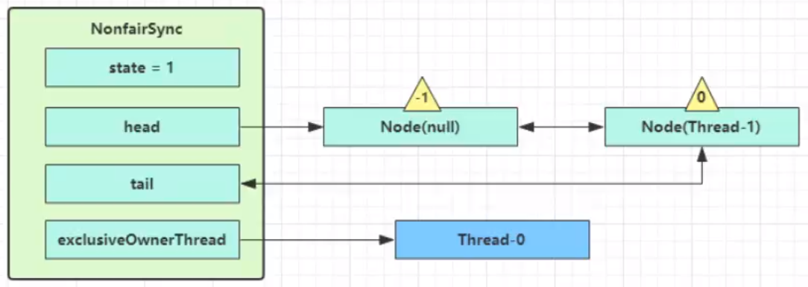
* shouldParkAfterFailedAcquire 执行完毕回到 acquireQueued ，再次 tryAcquire 尝试获取锁，当然这时 state 仍为 1，失败
* 当再次进入 shouldParkAfterFailedAcquire 时，这时因为其前驱 node 的 waitStatus 已经是 -1，这次返回 true
* 进入 parkAndCheckInterrupt， Thread-1 park（灰色表示）

* 再次有多个线程经历上述过程竞争失败，变成这个样子

* Thread-0 释放锁
1
2
3
4
5
6
7
8
9
10
11
12
13
14
15
16
17
18
19
20
21
22
23
24
25
26
27
28
29
public void unlock() {
sync.release(1);
}
public final boolean release(int arg) {
if (tryRelease(arg)) {
Node h = head;
if (h != null && h.waitStatus != 0)
unparkSuccessor(h);
return true;
}
return false;
}
private void unparkSuccessor(Node node) {
int ws = node.waitStatus;
if (ws < 0)
compareAndSetWaitStatus(node, ws, 0);
Node s = node.next;
if (s == null || s.waitStatus > 0) {
s = null;
for (Node t = tail; t != null && t != node; t = t.prev)
if (t.waitStatus <= 0)
s = t;
}
if (s != null)
LockSupport.unpark(s.thread);
}
1
2
3
4
5
6
7
8
9
10
11
12
13
14
15
16
17
18
19
20
21
22
23
24
25
* 进入 tryRelease 流程，如果成功
* 设置 exclusiveOwnerThread 为 null
* state = 0

* 当前队列不为 null，并且 head 的 waitStatus = -1，进入 unparkSuccessor 流程
* 找到队列中离 head 最近的一个 Node（没取消的），unpark 恢复其运行，本例中即为 Thread-1
* 回到 Thread-1 的 acquireQueued 流程

* **如果加锁成功（没有竞争）**，会设置
* exclusiveOwnerThread 为 Thread-1，state = 1
* head 指向刚刚 Thread-1 所在的 Node，该 Node 清空 Thread
* 原本的 head 因为从链表断开，而可被垃圾回收
* **如果这时候有其它线程来竞争（非公平的体现）**，例如这时有 Thread-4 来了

* 如果不巧又被 Thread-4 占了先
* Thread-4 被设置为 exclusiveOwnerThread，state = 1
* Thread-1 再次进入 acquireQueued 流程，获取锁失败，重新进入 park 阻塞
可重入原理
- 见单独插页
可打断原理
- 见单独插页
公平锁实现原理
- 见单独插页
条件变量实现原理
- 见单独插页
8.2.3 读写锁ReentrantReadWriteLock
基本使用
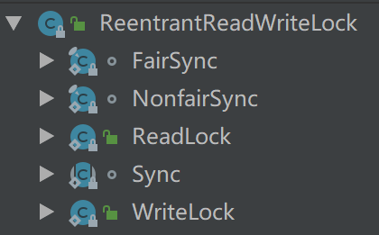
- 当读操作远远高于写操作时，这时候使用 读写锁 让 读-读 可以并发，提高性能。 类似于数据库中的 select … from … lock in share mode
- 提供一个 数据容器类 内部分别使用读锁保护数据的 read() 方法，写锁保护数据的 write() 方法
1 | 4j(topic = "MultiThread") |
注意事项
读锁不支持条件变量
重入时升级不支持【即持有读锁的情况下去获取写锁】会导致获取写锁永久等待
1
2
3
4
5
6
7
8
9
10
11
12r.lock();
try {
// ...
w.lock();
try {
// ...
} finally{
w.unlock();
}
} finally{
r.unlock();
}重入时降级支持【持有写锁的情况下去获取读锁】
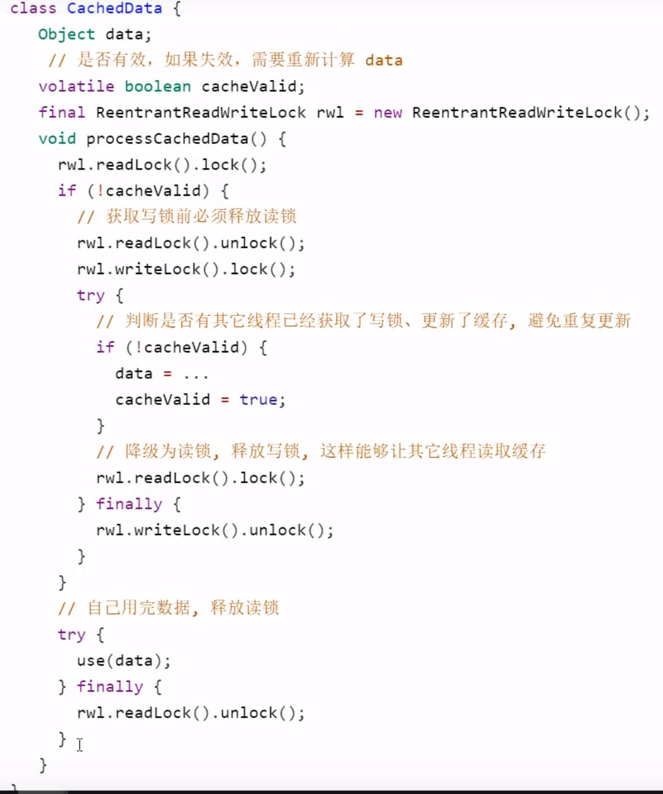
读写锁应用：缓存更新策略
不加锁更新时，是先清缓存还是先更新数据库
先清缓存【问题更严重】
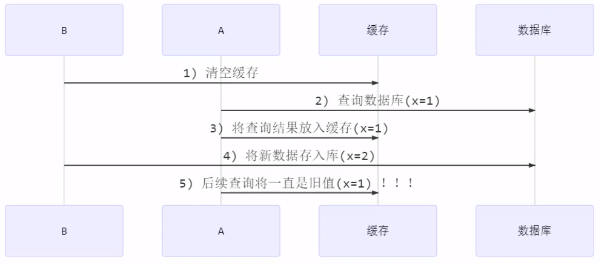
先更新数据库【有点问题】
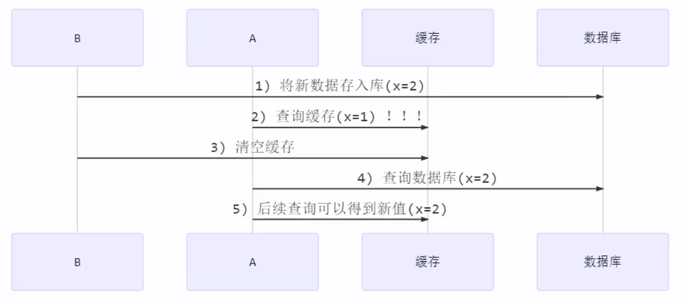
将1 3 锁定 可以适当解决
数据库读写锁应用
1
2
3
4
5
6
7
8
9
10
11
12
13
14
15
16
17
18
19
20
21
22
23
24
25
26
27
28
29
30
31
32
33
34
35
36
37
38
39
40
41
42
43
44
45
46
47
48
49
50
51
52
53
54
55
56
57class GenericDaoCached extends GenericDao {
private GenericDao dao = new GenericDao();
private Map<SqlPair, Object> map = new HashMap<>();
private ReentrantReadWriteLock rw = new ReentrantReadWriteLock();
public <T> T queryOne(Class<T> beanClass, String sql, Object... args) {
// 先从缓存中找，找到直接返回
SqlPair key = new SqlPair(sql, args);
rw.readLock().lock();
try {
T value = (T) map.get(key);
if(value != null) {
return value;
}
} finally {
rw.readLock().unlock();
}
rw.writeLock().lock();
try {
// 多个查询到为null的线程 双重检查
T value = (T) map.get(key);
if(value == null) {
// 缓存中没有，查询数据库
value = dao.queryOne(beanClass, sql, args);
map.put(key, value);
}
return value;
} finally {
rw.writeLock().unlock();
}
}
public int update(String sql, Object... args) {
rw.writeLock().lock();
try {
// 先更新库
int update = dao.update(sql, args);
// 清空缓存
map.clear();
return update;
} finally {
rw.writeLock().unlock();
}
}
class SqlPair {
private String sql;
private Object[] args;
public SqlPair(String sql, Object[] args) {
this.sql = sql;
this.args = args;
}
}
}适合读多写少，如果写操作比较频繁，性能较低
没有考虑缓存容量
没有考虑缓存过期
原理
- 见单独插页
8.2.4 StampedLock
基本使用
该类自 JDK 8 加入，是为了进一步优化读性能，它的特点是在使用读锁、写锁时都必须配合【戳】使用
加解读锁
1
2long stamp = lock.readLock();
lock.unlockRead(stamp);加解写锁
1
2long stamp = lock.writeLock();
lock.unlockWrite(stamp);乐观读，
StampedLock支持tryOptimisticRead()方法（乐观读），读取完毕后需要做一次戳校验。如果校验通过，表示这期间确实没有写操作，数据可以安全使用，如果校验没通过，需要重新获取读锁，保证数据安全。1
2
3
4long stamp = lock.tryOptimisticRead(); // 验戳
if(!lock.validate(stamp)){
// 锁升级
}1
2
3
4
5
6
7
8
9
10
11
12
13
14
15
16
17
18
19
20
21
22
23
24
25
26
27
28
29
30
31
32
33
34
35
36
37
38
39
40
41
42
43
44
45
46
47
48
49
50
51
52
53
54
55
56
57
58
59
60
61
62public static void main(String[] args) {
DataContainer dataContainer = new DataContainer();
new Thread(()->{
int read = dataContainer.read(1);
}).start();
sleep(0.5);
new Thread(()-> dataContainer.write()).start();
}
4j(topic = "c.DataContainerStamped")
class DataContainerStamped {
private int data;
private final StampedLock lock = new StampedLock();
public DataContainerStamped(int data) {
this.data = data;
}
public int read(int readTime) {
long stamp = lock.tryOptimisticRead();
log.debug("optimistic read locking...{}", stamp);
sleep(readTime);
if (lock.validate(stamp)) { //戳验证成功
log.debug("read finish...{}, data:{}", stamp, data);
return data;
}
// 验戳失败 锁升级 乐观读 -> 读锁
log.debug("updating to read lock... {}", stamp);
try {
stamp = lock.readLock();
log.debug("read lock {}", stamp);
sleep(readTime);
log.debug("read finish...{}, data:{}", stamp, data);
return data;
} finally {
log.debug("read unlock {}", stamp);
lock.unlockRead(stamp);
}
}
public void write(int newData) {
long stamp = lock.writeLock();
log.debug("write lock {}", stamp);
try {
sleep(2);
this.data = newData;
} finally {
log.debug("write unlock {}", stamp);
lock.unlockWrite(stamp);
}
}
}
/*
10:00:51.141 [Thread-0] c.DataContainer - optimistic read locking...256
10:00:51.640 [Thread-1] c.DataContainer - 获取写锁...
10:00:51.640 [Thread-1] c.DataContainer - 写入
10:00:52.155 [Thread-0] c.DataContainer - updating to read lock... 256
10:00:52.640 [Thread-1] c.DataContainer - 释放写锁...
10:00:52.640 [Thread-0] c.DataContainer - read lock 513
10:00:53.640 [Thread-0] c.DataContainer - read finish...513, data:0
10:00:53.640 [Thread-0] c.DataContainer - read unlock 513
*/
注意事项
- StampedLock 不支持条件变量
- StampedLock 不支持可重入
8.2.5 信号量Semaphore
基本使用
- 信号量，用来限制能同时访问共享资源的线程上限。
1 | 4j(topic = "c.TestSemaphore") |
应用
- 使用Semaphore限流，在访问高峰期时，让请求线程阻塞，高峰期过去再释放许可，当然它只适合限制单机线程数量，并且仅是限制线程数，而不是限制资源数（例如连接数，请对比Tomcat LimitLatch的实现）
- 用Semaphore实现简单连接池，对比【享元模式】下的实现(用wait notify) ，性能和可读性显然更好
1 | // 5. 借连接 |
原理
- 见单独插页
8.2.6倒计时锁CountdownLatch
- 用来进行线程同步协作，等待所有线程完成倒计时。
- 其中构造参数用来初始化等待计数值，await() 用来等待计数归零，countDown() 用来让计数减一
- CountDownLatch能够使一个或多个线程等待其他线程完成各自的工作后再执行。
- 可以理解为一个计数器。在初始化 CountDownLatch 的时候会在类的内部初始化一个int的变量，每当调用 countDownt() 方法的时候这个变量的值减1，而 await() 方法就是去判断这个变量的值是否为0，是则表示所有的操作都已经完成，否则继续等待。
- 特有方法：
1 | //指定计数的次数，只能被设置1次 |
- 使用场景
- 开启多个线程分块下载一个大文件，每个线程只下载固定的一截，最后由另外一个线程来拼接所有的分段。
- 应用程序的主线程希望在负责启动框架服务的线程已经启动所有的框架服务之后再执行。
- 确保一个计算不会执行，直到所需要的资源被初始化。
- 实例
1 | class Main { |
8.2.7 循环栅栏CyclicBarrier
循环栅栏，用来进行线程协作，等待线程满足某个计数。构造时设置『计数个数』，每个线程执行到某个需要“同步”的时刻调用 await() 方法进行等待，当等待的线程数满足『计数个数』时，继续执行
CyclicBarrier 与 CountDownLatch 的主要区别在于 CyclicBarrier 是可以重用的 CyclicBarrier 可以被比喻为『人满发车』
1
2
3
4
5
6
7
8
9
10
11
12
13
14
15
16
17
18
19
20
21
22
23
24
25
26
27
28
29
30
31
32
33
34
35
36public static void main(String[] args) {
//注意：线程池与Count数一致 否则由于时间不同 导致出发await的不是预期的线程
ExecutorService service = Executors.newFixedThreadPool(2);
CyclicBarrier barrier = new CyclicBarrier(2, ()-> {
log.debug("task1, task2 finish...");
}); //第二个参数可以在计数个数到0的时候执行
for (int i = 0; i < 3; i++) { // task1 task2 task1
service.submit(() -> {
log.debug("task1 begin...");
Sleeper.sleep(1);
try {
barrier.await(); // 2-1=1
} catch (InterruptedException | BrokenBarrierException e) {
e.printStackTrace();
}
});
service.submit(() -> {
log.debug("task2 begin...");
Sleeper.sleep(2);
try {
barrier.await(); // 1-1=0
} catch (InterruptedException | BrokenBarrierException e) {
e.printStackTrace();
}
});
}
service.shutdown();
}
/*
09:43:36.933 [pool-1-thread-1] MultiThread - task1 begin...
09:43:36.933 [pool-1-thread-2] MultiThread - task2 begin...
09:43:38.936 [pool-1-thread-2] MultiThread - task1, task2 finish...
09:43:38.936 [pool-1-thread-1] MultiThread - task1 begin...
09:43:38.936 [pool-1-thread-2] MultiThread - task2 begin...
09:43:40.936 [pool-1-thread-2] MultiThread - task1, task2 finish...
*/
注意事项
- 线程池线程数和CyclicBarrier的参数数量一样
原文作者: 掘金木匠
原文链接: http://goldcarpenter.github.io/2019/08/31/多线程_Part10/
版权声明: 转载请注明出处(必须保留作者署名及链接)